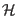
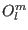
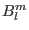
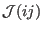
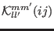

Next: Intermediate Coupling Up: The Hamiltonian Previous: The Hamiltonian Contents Index
A more specific example of is the following magnetic Hamiltonian  for rare earth ions, which may be treated with the program package:
The first term describes the crystal field (Stevens Operators , see table in appendix G), the second the magnetic exchange interaction, the third the Zeeman energy if an external magnetic field is applied. Instead (or rather in addition) to this it is also possible to treat the more general two ion exchange coupling
For further information on the notation and symmetry restrictions to the parameters in the Hamiltonian refer to [1].
In addition to the above terms in the Hamiltonian the coupling of magnetic and lattice properties is possible by introducing magnetoelastic interactions: In order to calculate magnetoelastic effects the parameters ,  (or more general the ) are expanded in a Taylor expansion in the strain tensor resulting in the magnetoelastic interaction (i.e. keeping only the terms linear in ). The equilibrium strain can be calculated by considering in addition the elastic energy and minimising the total free energy. The procedure is described in detail in [18].
Exercises: